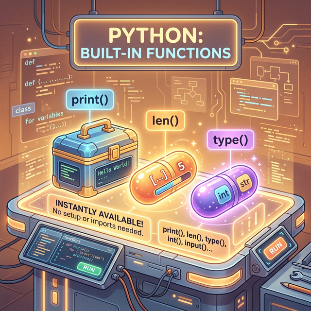
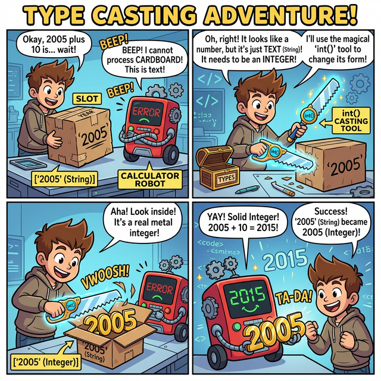

3.1.7 내장 함수와 기본 메서드 활용
학습목표
본 장에서는 별도의 무거운 파일 설치나 복잡한 코드 작성 없이 파이썬이 기꺼이 무료로 제공하는 강력한 기본 도구들인 ‘내장 함수’의 핵심 종류를 살펴봅니다. 또한, 데이터의 타입을 상황에 맞게 자유자재로 바꾸는 ‘형 변환(Casting)’ 기술과 문자열, 리스트 등 각 자료형이 고유하게 품고 있는 특수 스킬인 ‘메서드(Method)’의 기본 활용법을 익힙니다.
📥 내장 함수와 기본 메서드 활용 실습용 노트북 다운로드 및 실행:
- 로컬 환경용 다운로드 (VS Code 등에서 실행)
(웹 브라우저에서 바로 실습)
내장 함수와 메서드
파이썬은 무거운 패키지나 모듈을 별도로 설치하지 않아도, 데이터를 쉽게 다루고 형 변환을 할 수 있게 도와주는 수많은 내장 함수(Built-in Function)와 메서드(Method)를 기본으로 제공합니다.

(AI가 그린 개념도: 파이썬이 기본으로 제공하는 특별한 공구 상자들(print(), len(), type())이 개발자의 책상 위에 즉시 사용 가능하도록 준비된 모습을 보여줍니다.)
빈번히 사용되는 기본 내장 함수는 다음과 같습니다.
- 입출력:
input(),print() - 연산 및 통계:
min(),max(),abs(),round() - 자료구조 생성/변환:
list(),tuple(),set(),dict(),type() - 자료형 캐스팅(형 변환):
int(),float(),str(),bool()
입출력과 데이터 형 변환(Casting)
input() 함수를 통해 사용자의 키보드 입력을 처리할 수 있습니다. 입력된 값은 기본적으로 문자열(str) 형태로 반환됩니다.
year = input('당신이 태어난 년도는 ? ')
# 사용자가 2005를 입력
print("저장된 타입:", type(year)) # <class 'str'>
위의 경우 year 변수가 숫자 2005가 아닌 문자열 "2005"로 저장되어 있기 때문에 2026 - “2005” 같은 수학적 연산을 시도하면 즉각 에러가 발생합니다. 종이 상자(“2005”)와 쇳덩어리 숫자(2026)는 연산이 불가능하기 때문입니다.
마법의 껍질 벗기기: 형 변환 (Casting)

(웹툰 비유: 계산기 로봇이 종이 박스(“2005”)를 보고 계산을 거부합니다. 그러자 주인공이int()라는 마법의 칼로 종이 박스를 북북 찢어버리자, 그 안에서 진짜 쇳덩어리 숫자 2005가 등장하여 로봇이 기뻐하며 계산을 시작합니다!)
 (다이어그램: 연산이 불가능한 점선 문자열 상자
(다이어그램: 연산이 불가능한 점선 문자열 상자 "2005"가 int() 용광로 기계를 통과하자, 단단하고 덧셈 뺄셈이 가능한 정수 쇳덩어리 2005로 캐스팅(주조)되어 나오는 팩토리 애니메이션입니다.)
이를 해결하기 위해 파이썬이 기본 제공하는 형 변환(Casting) 주문을 외워야 합니다.
필수 형 변환 내장 함수 요약
- 글자를 숫자로 (
str$\to$int/float):int()나float()을 사용해 숫자 형태의 문자열 껍데기를 벗겨내고 진짜 계산 가능한 수치(정수/실수)로 제련합니다. - 숫자를 글자로 (
int/float$\to$str):str()을 사용해 계산이 끝난 숫자를 다시 문자열 종이 박스에 포장합니다. (문장 더하기+를 할 때 필수적입니다.) - 논리 조작 (
bool):bool()은 특정 값을 무조건 참(True)이나 거짓(False)으로 우격다짐 변환합니다. 빈 문자열("")이나0은False가 되지만, 그 외의 텍스트(“Hello”)나 숫자(15)는 모두True로 판별됩니다.
# 입력과 동시에 숫자로 캐스팅(형 변환) 처리
year_num = int(input('당신이 태어난 년도는 ? '))
age = 2026 - year_num
print('선생님의 나이는:', age) # 이제 정상적으로 뺄셈 가능
# 문자열 변환 예제
temperature = 36.5
status = "현재 체온은 " + str(temperature) + "도 입니다."
print(status)
컬렉션 데이터들의 형 변환
데이터 분석 과정에서는 리스트를 튜플로, 배열을 집합으로 자유롭게 변경해야 할 때가 많습니다. 역시 내장 함수를 사용합니다.
# 리스트 ↔ 튜플
lst = [1, 2, 3]
tup = tuple(lst)
# 리스트, 튜플 → 집합 변환 (중복을 쉽게 제거하는 테크닉)
repeated_list = [5, 10, 10, 15]
unique_set = set(repeated_list) # {5, 10, 15}로 중복 파괴
산술 내장 함수 활용
기초적인 사칙연산 외에도 파이썬은 여러 수학 내장 함수를 제공하여 통계와 숫자 가공을 돕습니다.
print("최댓값:", max(10, 100, 1))
print("최소값:", min([10, 11, 12]))
print("절댓값:", abs(-3))
print("반올림:", round(3.1415, 3)) # 소수점 셋째 자리까지 3.142
자주 쓰이는 자료형별 내장 메서드 (Method)
모든 객체는 내부에 고유한 동작을 수행하는 메서드(Method)를 갖추고 있습니다. 객체에 점(.)을 찍어 호출하며 데이터의 변형과 추출을 이끕니다.
① 문자열(str) 메서드
| 메서드 | 설명 |
| — | — |
| upper(), lower() | 모든 문자를 일괄 대/소문자로 변환합니다. |
| replace(old, new) | 문자열 안에 존재하는 특정 패턴 old를 찾아 new 텍스트로 치환합니다. |
| split(sep) | 구분자(sep)를 기준으로 하나의 거대한 문자열을 쪼개어 리스트 형태로 반환합니다. |
| strip() | 텍스트의 양쪽 끝에 붙어있는 불필요한 공백과 줄바꿈을 깔끔하게 제거합니다. |
② 리스트(list) 메서드
| 메서드 | 설명 |
| — | — |
| append(item) | 리스트 데이터의 맨 끝 라인에 새로운 요소를 밀어 넣습니다. 추가/확장에 가장 많이 쓰입니다. |
| remove(item) | 리스트 안에 존재하는 특정 값을 검색해 삭제합니다. |
| pop(index) | 원하는 인덱스 요소를 완전히 도려내어 반환합니다. 기본값은 맨 뒷 요소입니다. |
| sort() | 리스트 안의 모든 요소를 오름차순(기본값) 혹은 내림차순으로 예쁘게 정렬해 줍니다. |
③ 딕셔너리(dict) 메서드
| 메서드 | 설명 |
| — | — |
| keys(), values() | 딕셔너리에 존재하는 순수 키 목록, 혹은 순수 값 목록만 추출하여 반환합니다. |
| items() | (키, 값)의 구조를 튜플 조합으로 일괄 반복 생성합니다. for문과 함께 매우 폭넓게 사용됩니다. |
| get(key) | 해당하는 값(Value)을 안전하게 찾아서 반환합니다. 없으면 에러 발생 대신 None을 뱉어냅니다. |
④ 집합(set) 벤 다이어그램 연산
| 메서드 | 설명 |
| — | — |
| add(item) / remove(item) | 집합 전용 추가/삭제 메서드입니다. |
| union() / intersection() | 서로 다른 두 집합 간의 합집합(A∪B), 교집합(A∩B) 데이터를 새롭게 도출해 냅니다. |
정리
우리는 파이썬 코어 엔진이 기본으로 품고 있는 input(), max() 같은 훌륭한 내장 도구 공구 상자와, int(), str()을 통해 데이터 형태를 마음대로 찰흙처럼 구부려 맞추는 캐스팅(형 변환) 기술을 습득했습니다. 나아가, 각 자료형 자체가 몰래 숨기고 있는 자신만의 마법 주문서(method: .upper(), .append() 등)를 어떻게 꺼내 쓰는지 살펴봄으로써 데이터 조작의 새로운 장에 진입 완료했습니다.